Instagram es una red social centrada en compartir contenido visual como fotos, videos, reels e historias. Está dirigida principalmente a jóvenes y adultos, y su modelo de negocio se basa en la publicidad personalizada.
Instagram funciona como un sistema que recopila datos constantemente a través de las interacciones del usuario. Estos datos alimentan el algoritmo, que reorganiza el contenido, sugerencias y publicidad.
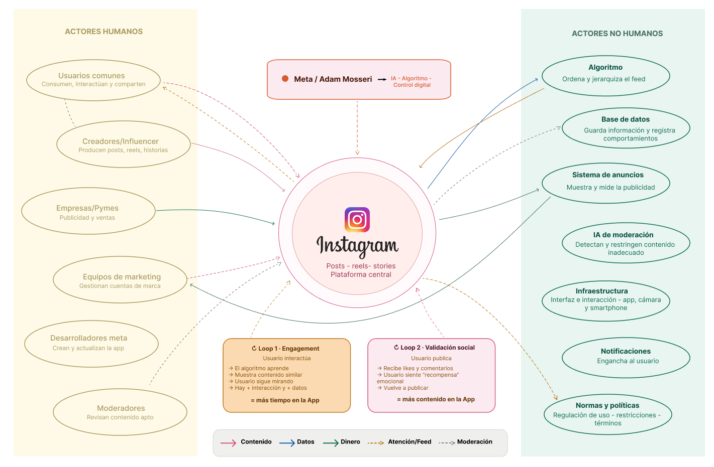
El mapa organiza los actores en tres zonas: humanos a la izquierda, el núcleo de la plataforma al centro (Meta, algoritmo, datos, y anuncios) y actores humanos a la derecha. Se distinguen cuatro flujos: contenido (rosado), datos (azul), dinero (verde), atención (amarillo) y moderación (gris). Los puntos de control son Meta y el algoritmo, y se identifican dos retroalimentaciones: engagement y validación social. Se priorizó mostrar cómo cirulan los flujos y dónde se concentra el control. Los colores simplifican la lectura y las retroalimentaciones evidencian cómo la interacción y la validación sostienen el sistema.
Creamos una cuenta nueva de instagram para ver como la plataforma construye e identifica los intereses del usuario desde cero.
La aplicación realiza preguntas iniciales para identificar intereses y objetivos del usuario, y ofrece sincronizar el número de teléfono para sugerir contactos conocidos. Además, te da las opciones de agregar el nombre, presentación y foto de perfil. Desde este punto, comienza a recopilar datos personales y a construir un perfil inicial.
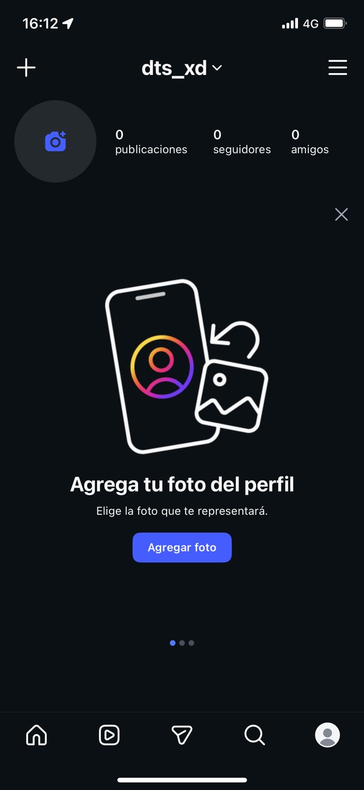
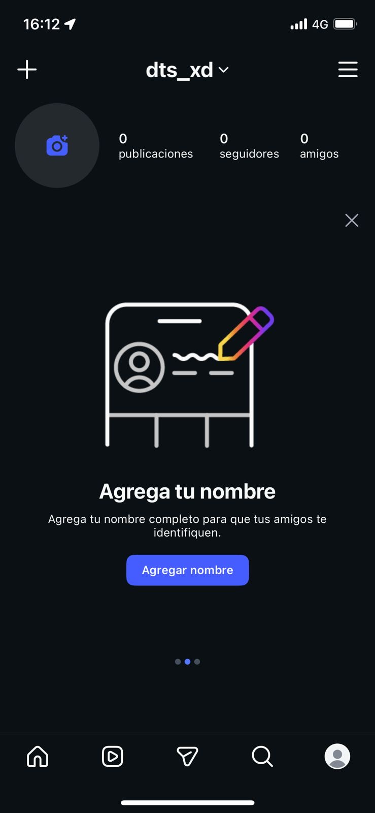
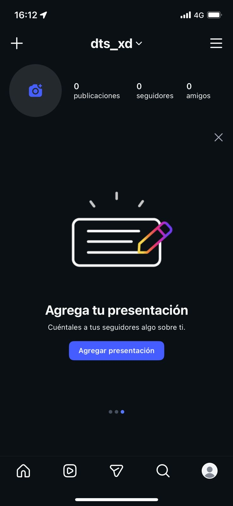
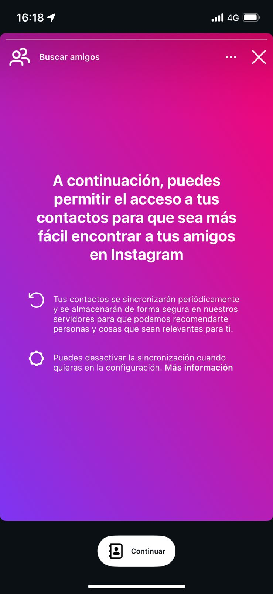
Ya dentro de la aplicación instagram muestra las funciones básicas para saber usar bien la aplicación. Por ejemplo, al ingresar a la cámara aparecen opciones como selfies, boomerangs, layouts, publicaciones, stories y reels.
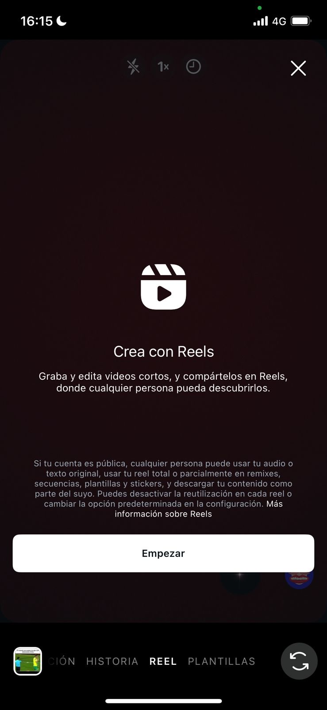
Al entrar a la sección explorar la plataforma muestra publicaciones y reels muy variados entre sí ya que la cuenta no tenía un historial previo.
Tras consumir contenido, interactuamos con una publicación de paisaje: le dimos like y la guardamos en una carpeta. Esta acción representa una señal clara de interés, ya que no solo se visualiza el contenido, sino que también se guarda.
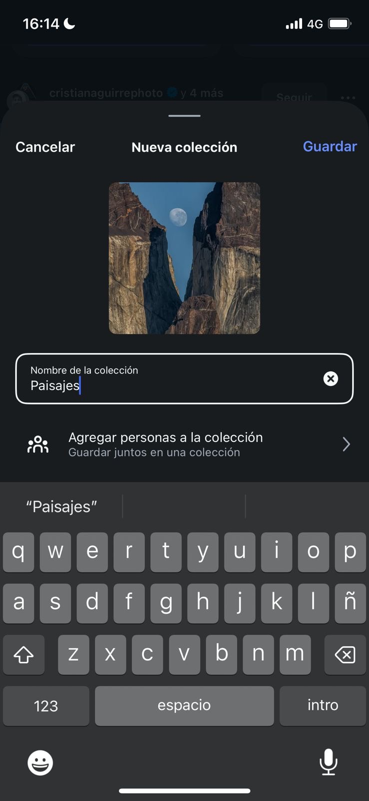
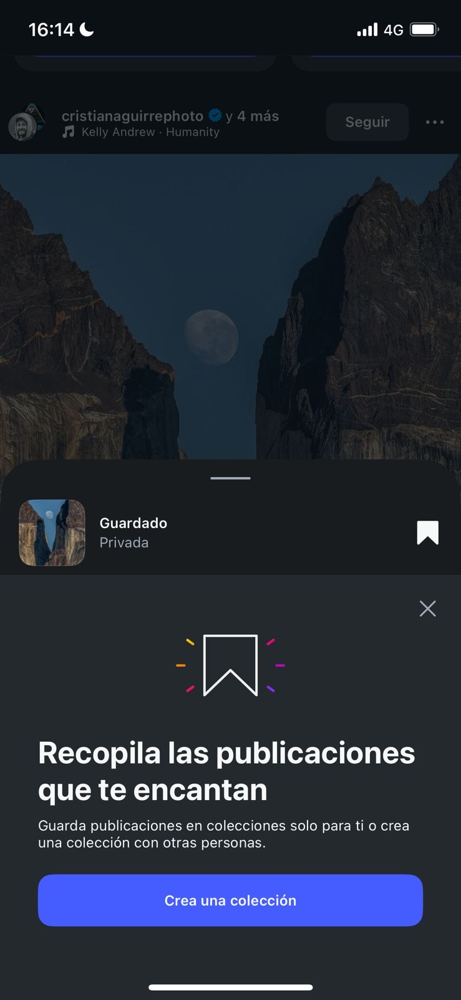
Tras interactuar con una publicación de paisaje, el contenido comenzó a ajustarse rápidamente, mostrando más publicaciones similares. Las sugerencias de cuentas también cambiaron, incluyendo perfiles de paisajes, viajes y fotografía, evidenciando la adaptación de la plataforma a los intereses del usuario.
Finalmente, también cambiaron los anuncios dentro de la aplicación. La publicidad comenzó a relacionarse con viajes, destinos turísticos y experiencias asociadas a paisajes. Esto evidencia que las interacciones del usuario modifican también la publicidad recibida.
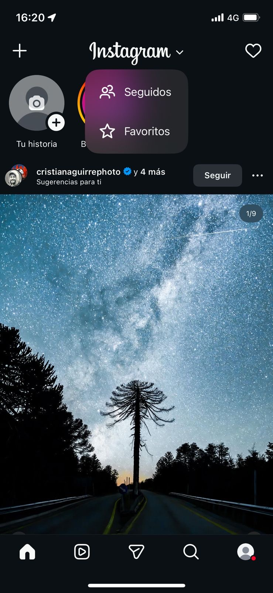
La plataforma reorganiza contenido, sugerencias y anuncios en función de cada interacción del usuario.
A continuación, se presentan tres scripts del diseño de Instagram, que muestran cómo la plataforma guía e influye en el comportamiento del usuario.
Instagram está diseñado para que interactuar sea lo más fácil y rápido posible mediante el doble toque o el botón de like. Esto permite que la reacción del usuario sea casi automática. Además, tal como se ve en los pantallazos, cuando ves publicaciones o reels, el botón del “like” siempre está visible, incentivando a usarlo todo el rato, lo que facilita una interacción continua.
- Dar like de forma automática
- Consumir contenido sin parar
- Generar interacción constante sin ser consciente de la intención
- Durante la exploración del feed
- Al deslizar en los reels
- Cuanto el usuario empieza a entrenar el algoritmo, por ejemplo cuando le damos like a fotos de paisajes, como se ve en los siguientes pantallazos:

- Inmediatez
- Rapidez
- Eficiencia
A la plataforma, ya que le permite saber los intereses y preferencias del usuario, alimentando el algoritmo y mejorando la personalización del contenido.
Desde que se empieza a usar Instagram, la app te lleva a hacer cosas simples como seguir cuentas, dar likes o guardar contenido. Esto permite construir progresivamente el perfil algorítmico del usuario.
Al interactuar con contenidos de paisajes el feed y explorar se transformaron rápidamente en contenido del mismo tipo. Esto se evidencia en los siguientes pantallazos en donde se muestra el antes y el después del feed:
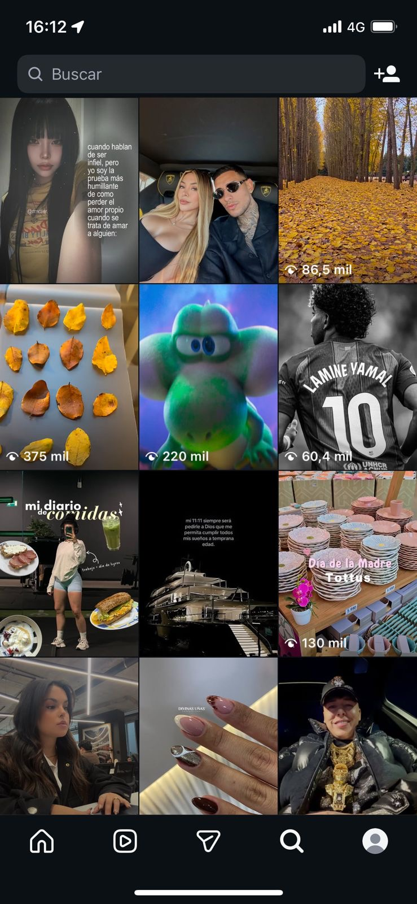

- Interactuar con contenido específico
- Entrenar el algoritmo inconscientemente
- Profundizar en uno o pocos contenidos
- Al empezar con la selección de intereses
- Al dar like y guardar publicaciones
- En el cambio del feed después de algunas interacciones
- personalización
- relevancia
- eficiencia
A la plataforma, a los anunciantes y al usuario, ya que permite entender rápido el gusto del usuario y ofrecerle contenido y anuncios creados especialmente según sus intereses.
Instagram no solo muestra la cantidad de likes en una publicación o una historia sino que también la identidad de quienes interactuaron. Muestra quien dio like, quien vio la historia y quien te sigue. Esto convierte la interacción en una forma de validación social.
Como se observa en los pantallazos, el usuario puede acceder fácilmente a esta información desde el feed, las historias y las notificaciones.
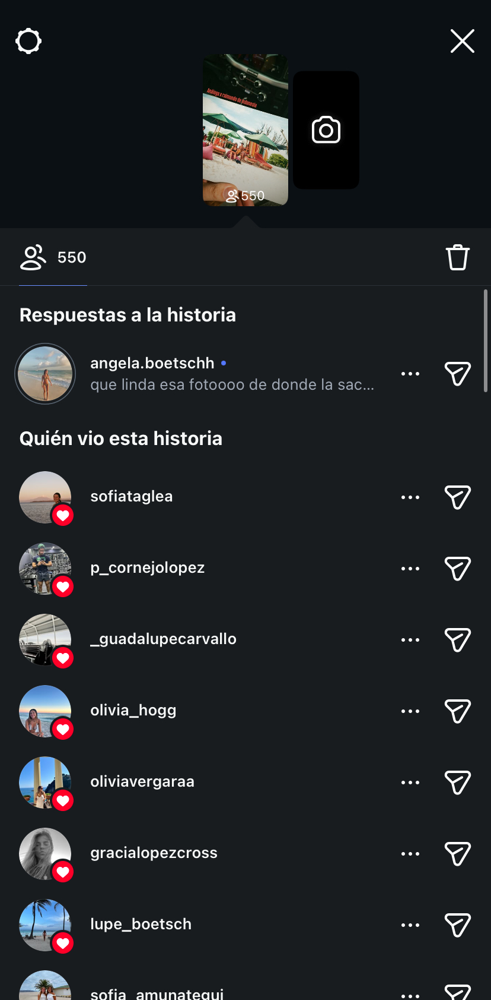
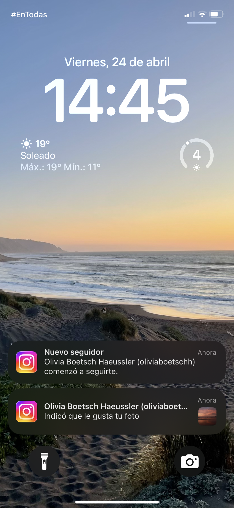
- Revisar constantemente quien interactúa
- Publicando contenido esperando la validación de personas específicas
- Compararse con otros usuarios
- Después de publicar contenido (esperando likes e interacciones)
- Al revisar constantemente notificaciones
- Al ver quienes visualizaron las historias
- Al reingresar a la app solo para ver quienes realizaron interacciones
- validación social
- reconocimiento
- visibilidad
- competencia
Principalmente a la plataforma ya que este sistema aumenta el tiempo de uso, la frecuencia de revisión y la dependencia del usuario, lo que se traduce en mayor exposición a contenido y publicidad.

Porque este diseño genera un sistema de hipervigilancia social, donde el usuario no solo busca la aprobación en general sino que de personas específicas. Esto produce una dependencia hacia la validación externa, generando una constante comparación, ansiedad y una pérdida del propósito original de compartir contenido.

El rediseño de Instagram prioriza un enfoque centrado en el bienestar y la autenticidad por sobre la lógica de popularidad y validación social que domina la plataforma original. En lugar de visibilizar números de likes y comentarios, busca que las interacciones sean más reales y privadas. Con esto se gana una experiencia más tranquila y menos presión por compararse con otros, pero se pierde la facilidad de ver rápidamente qué contenido es popular o "importante". en el fondo, no intenta mejorar lo mismo de siempre, sino cambiar la forma en que funciona la red social desde otra lógica
Olivia Boetsch, Olivia Hogg, Emilia Sanfuentes, Sofia Tagle y Olivia Vergara